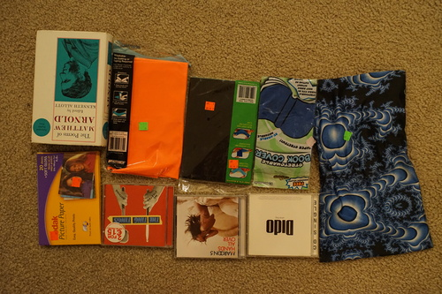

I was wanting to try making monpe so I was googling around and I found this super simple pattern made of boxes and triangles. I divided the measurements by 3 and started cutting.
My first mistake was to NOT look at the diagram while assembling the pieces. I paid for that mistake in seam ripping. There's an unavoidable 3 seam intersection that I found difficult to sew, but the rest of it was fairly simple (after looking at the instructions).

I also made a tank top. I couldn't wait to wash/heat the frixion ink off it to try it on! I'm having Cheby model them, but I think this set combo would look better on Verona. I'll have to make these pieces again in black. That being said, I still have him in it while he sits next to me while I write this! He's so cute!!!
Please check out the bulletin board I made for my cafe over the last 2 days! Send me a photo of your doll(s) if you want me to add it (*´∀`*) I have support for instax square and wide too. It was Ryan's midnight idea and hors helped me with CSS (as always). Thank you Ryan and hors!
I hope Ryan's books will be well covered.
Originally sold by HMV for €10. Which European country uses English and euros?? Is it from Ireland??
I've been curious if copics would work on this. They don't at all! Don't bother trying it.
I found Black Eyed Peas and Pussycat Dolls with the CDs I bought. There's some music I wouldn't seek out, but I would own for nostalgia of the time and then there's the Black Eyed Peas. No thanks.